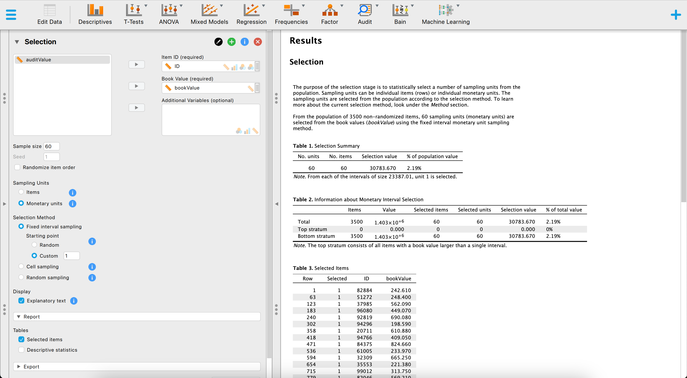

8 JASP for Audit
You are reading the work-in-progress first edition of Statistical Auditing with R. This chapter is currently a dumping ground of ideas, and it is incomplete.
JASP (JASP Team, 2022), an acronym for Jeffreys’s Amazing Statistics Program, is a free and open-source software for statistical analysis developed at the University of Amsterdam. It is intended to be user-friendly and familiar to those who have experience with SPSS. A significant feature of JASP is that it provides most standard statistical analysis procedures in both their classical and Bayesian forms. The program can be downloaded freely from their website https://jasp-stats.org. The software is translated into various languages.
JASP for Audit (Derks et al., 2021) is an add-on module for JASP based on the jfa package, that facilitates statistical audit sampling. The module provides graphical a user interface (GUI) for calculating sample sizes, selecting items according to standard audit sampling techniques, and performing inference about the population misstatement on the basis of a data sample or summary statistics of a sample. The module also features Bayesian equivalents of these analyses that enable the user to easily incorporate prior information into the statistical procedure. In all analyses, the Audit module offers explanatory text that helps the auditor in interpreting, explaining, and reporting the analysis. Since JASP for Audit is an R-based GUI around jfa, its functionality can be mapped almost one-on-one to that of the package.
The Audit module in JASP, labeled as “Audit” in the module list, is included by default in the software, but is not initially visible upon starting the program. To access the Audit module, click on the + icon in the top right corner of the JASP welcome screen, and select the module from the list of available options. The Audit module will then be displayed with a blue icon in the ribbon at the top of the screen.

+ icon displays all modules that are currently available in JASP. To activate a module and add it to the ribbon at the top of the screen, click on the checkbox next to it.Upon selecting the Audit module icon, the user can view all of the analyses that the module contains. It is important to note that some of these analyses are grayed out by default and can only be activated once a data set has been loaded into JASP. This means that the user must first import a data set in order to access and make use of these specific analyses.

8.1 Planning
To plan a sample for an audit using JASP, the procedure is comparable to using jfa. This means that both programs involve similar steps and considerations in order to effectively plan an audit sample. Like jfa, JASP for Audit offers a classical and a Bayesian approach to planning a sample.
The figure below showcases a snapshot of the classical planning analysis in JASP for Audit. The graphical user interface is displayed on the left side of the screen, while the audit report containing statistical results is displayed on the right side. In the user interface, the auditor can input the known parameters for the sample planning, after which JASP calculates and directly displays the statistical results.
The above screenshot shows an analysis where the auditor is using the binomial distribution, a sampling risk of 5%, a performance materiality of 3% and one expected misstatement in the sample. The resulting sample size is 157.
Using jfa, these statistical results can be reproduced by executing the following code:
planning(materiality = 0.03, expected = 1, likelihood = "binomial")
#>
#> Classical Audit Sample Planning
#>
#> minimum sample size = 157
#> sample size obtained in 156 iterations via method 'binomial'The figure below showcases a snapshot of the Bayesian planning analysis in JASP. The graphical user interface is largely the same as the interface of the classical planning analysis, with the exception that we can specify a prior distribution with the options under “Prior”.
The above screenshot shows an analysis where the auditor is using the Poisson likelihood together with an impartial gamma prior, a sampling risk of 5%, a performance materiality of 10% and no expected misstatements in the sample. The resulting sample size is 24.
Using jfa, these statistical results can be reproduced by executing the following code:
prior <- auditPrior(method = "impartial", materiality = 0.1)
planning(materiality = 0.1, likelihood = "poisson", prior = prior)
#>
#> Bayesian Audit Sample Planning
#>
#> minimum sample size = 24
#> sample size obtained in 25 iterations via method 'poisson' + 'prior'8.2 Selection
Selecting a sample in JASP for Audit works similar to how you would do it in jfa. The figure below showcases a snapshot of the selection analysis in JASP for Audit. In the user interface, the auditor can input the known parameters for the sample selection, after which JASP calculates and directly displays the statistical results.

The above screenshot shows an analysis where the auditor is using a fixed interval monetary unit sampling method to select a sample of 60 monetary units from the BuildIt population. They use a starting point of 1.
Using jfa, these statistical results can be reproduced by executing the following code:
set.seed(1)
data(BuildIt)
result <- selection(data = BuildIt, size = 60, units = "values", method = "interval", start = 1, values = "bookValue")
head(result$sample)
#> row times ID bookValue auditValue
#> 1 1 1 82884 242.61 242.61
#> 2 63 1 51272 248.40 248.40
#> 3 123 1 37985 562.09 562.09
#> 4 183 1 96080 449.07 449.07
#> 5 240 1 92819 690.08 690.08
#> 6 302 1 94296 198.59 198.598.3 Evaluation
Finally, evaluating a sample in JASP for Audit works similar to how you would do it in jfa. The figure below showcases a snapshot of the evaluation analysis in JASP for Audit. In the user interface, the auditor can input the known parameters for the sample evaluation, after which JASP calculates and directly displays the statistical results.

The above screenshot shows an analysis where the auditor is using the binomial likelihood, a sampling risk of 5%, a performance materiality of 6% and evaluates a sample of \(n = 50\) items of which \(k = 0\) contained a misstatement. The resulting 95% upper confidence bound is 5.8% and the p-value is 0.045, which is lower than the sampling risk of 5%.
Using jfa, these statistical results can be reproduced by executing the following code:
evaluation(materiality = 0.06, method = "binomial", x = 0, n = 50)
#>
#> Classical Audit Sample Evaluation
#>
#> data: 0 and 50
#> number of errors = 0, number of samples = 50, taint = 0, p-value =
#> 0.045331
#> alternative hypothesis: true misstatement rate is less than 0.06
#> 95 percent confidence interval:
#> 0.00000000 0.05815508
#> most likely estimate:
#> 0
#> results obtained via method 'binomial'The figure below showcases a snapshot of the Bayesian evaluation analysis in JASP. The graphical user interface is fairly similar to that of the classical evaluation analysis, with the exception that we can specify a prior distribution with the options under “Prior”.

The above screenshot shows an analysis where the auditor is using the binomial likelihood together with a beta prior distribution based on an expected error rate of 3% constructed using the audit risk model, a sampling risk of 5%, a performance materiality of 3% and evaluates a sample of \(n = 120\) items of which \(k = 1\) contained a misstatement. The resulting 95% upper credible bound is 3.27% and the Bayes factor in favor of tolerable misstatement is 9.394, indicating that the sample data are about 9 times more likely to occur under the hypothesis of tolerable misstatement than under the hypothesis of intolerable misstatement.
Using jfa, these statistical results can be reproduced by executing the following code:
prior <- auditPrior(method = "arm", likelihood = "binomial", materiality = 0.03, expected = 0.01, ir = 0.6, cr = 1)
evaluation(materiality = 0.03, method = "binomial", x = 1, n = 120, prior = prior)
#>
#> Bayesian Audit Sample Evaluation
#>
#> data: 1 and 120
#> number of errors = 1, number of samples = 120, taint = 1, BF₁₀ =
#> 9.3941
#> alternative hypothesis: true misstatement rate is less than 0.03
#> 95 percent credible interval:
#> 0.00000000 0.03267759
#> most likely estimate:
#> 0.0088415
#> results obtained via method 'binomial' + 'prior'